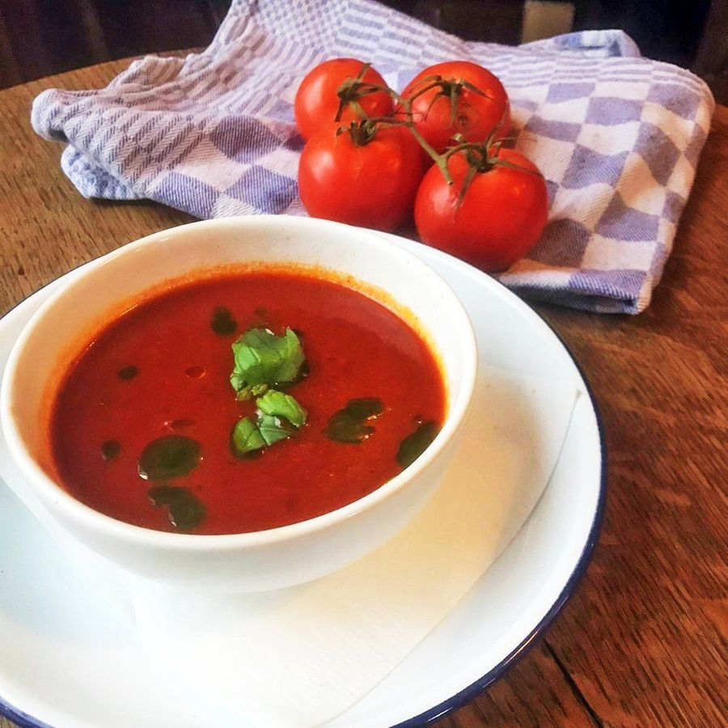
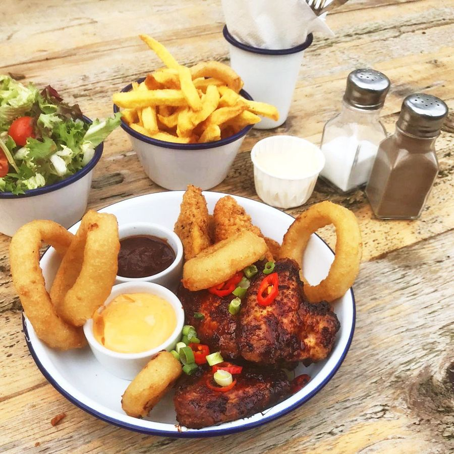
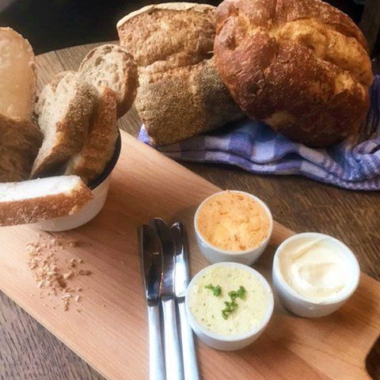
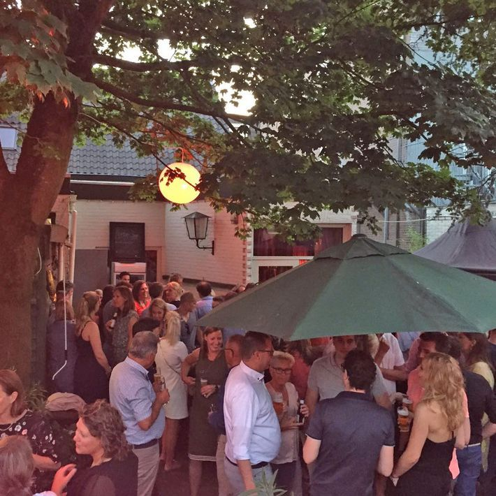
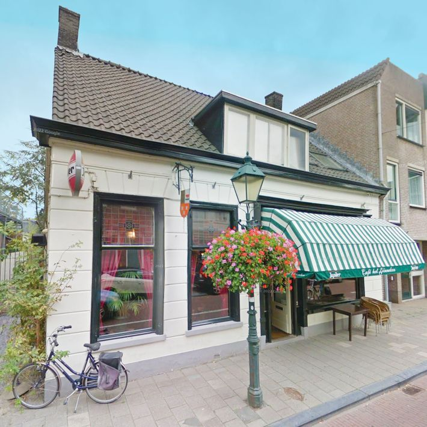

Een enigszins bescheiden kaart, maar wel met topproducten. Naast onze befaamde kippetjes ook bijvoorbeeld een super burger. Wij serveren de lekkerste kipgerechten, ambachtelijk brood met smeersels, burgers en verrassende dagschotels.






Op vrijdag- en zaterdagavond kun je het gehele café en de tuin gebruiken voor je (besloten) feest van 20 tot 200 personen. Ook op andere dagen kan het, bijvoorbeeld op zaterdag- of zondagmiddag. Wij rekenen hiervoor geen zaalhuur.




Zeker in de fraaie achtertuin zit je goed. Hier schuif je aan voor een borrel, een diner of een lunch. Met een groep of vriendengroep kun je ook een geheel besloten diner of lunch boeken, tegen zeer schappelijke prijzen en geheel in overleg.
Wel graag even reserveren.